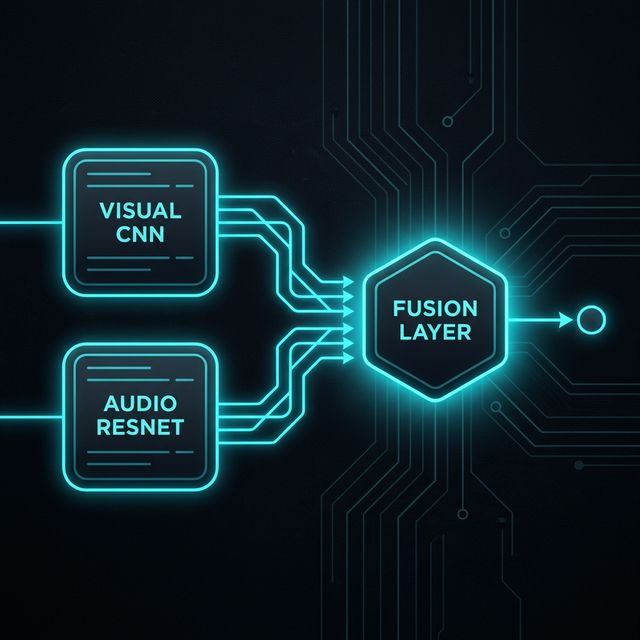

The Problem
Deepfakes are becoming increasingly sophisticated and accessible. AI-generated fake videos can:
- Spread misinformation: Fabricated videos of public figures can influence elections and public opinion
- Enable fraud: Voice cloning and face-swaps can be used for identity theft and scams
- Damage reputations: Non-consensual fake content can destroy personal and professional lives
- Undermine trust: The existence of deepfakes makes people question authentic media
The Solution
Deepfake Defender takes a late-fusion multi-modal approach: two specialized networks process video and audio in parallel, then concatenate their feature vectors through a fully connected fusion head. Each branch is pre-trained on a large general corpus before being fine-tuned on LAV-DF.
Video Branch — R3D-18
3D ResNet pre-trained on Kinetics-400; learns motion and time to catch unnatural lip movements.
Audio Branch — ResNet-18
ImageNet-pretrained ResNet treats the Mel-spectrogram as an image and looks for frequency-domain artifacts.
Late Fusion Head
Concatenates 512-dim feature vectors from both streams through a fully connected network for final classification.
Metadata-Guided Sampling
Custom dataset class reads fake_periods metadata to extract only the manipulated frame/audio segments — preventing label noise from training on unaltered regions.
System Architecture
The model processes video through parallel pipelines, extracting faces for visual analysis and audio spectrograms for voice analysis, then fuses the results.

Key Features
Multi-Modal Detection
Analyzes both visual artifacts (blinking patterns, lip sync) and audio artifacts (unnatural frequencies, voice inconsistencies) for comprehensive detection.
LAV-DF Dataset Training
Trained on the LAV-DF (Large-scale Audio-Visual Deepfake) dataset, featuring diverse manipulation techniques and real-world scenarios.
50× Pipeline Throughput
Offline audio pre-caching with FFmpeg and threaded OpenCV loading sped up data throughput by roughly 50×, making the training loop GPU-bound instead of I/O-bound.
Confidence Scoring
Returns a probability score with detailed breakdown of visual and audio contributions to the detection decision.
Impact & Results
Detection Capabilities
- 99.81% validation accuracy on LAV-DF in 3 epochs after the metadata-guided sampling fix
- 50× data-throughput speedup from offline FFmpeg pre-caching and threaded OpenCV decoding
- Catches content-driven manipulations that visual-only detectors typically miss
- Explainable by design — the late-fusion architecture surfaces which modality drove the decision
Technology Stack
PyTorch
Deep learning framework
OpenCV
Computer vision processing
FFmpeg
Audio/video extraction
CNN + ResNet
Visual & audio models
Python
Core implementation
Jupyter
Research & experimentation